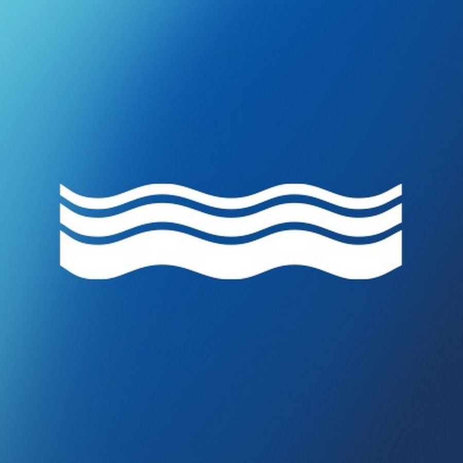
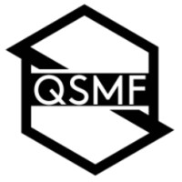
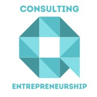
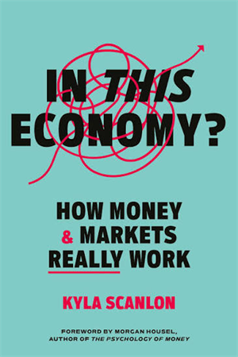
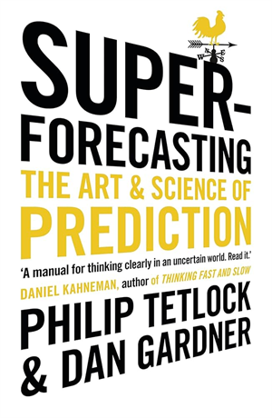
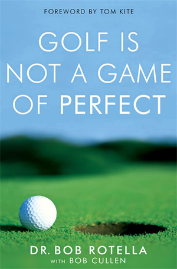

Finance student. Trading-ops engineer.
I'm a final-year BSc Finance student at Queen's University Belfast, just back from a 12-month placement at Susquehanna International Group in Dublin — one of the world's leading quantitative proprietary trading firms.
I combine capital-markets fluency with hands-on Python/SQL — the kind of work that bridges the trader and the engineer. Long-term, my interests lie in front-office and/or markets-facing roles.
Across 12 months at SIG, I rotated through Options Trade Support, ETF Trade Support, and Settlements. I built Python/SQL tooling that estimated potential rebates across 1,000+ listed derivatives on 6 European exchanges, automated market-making analytics, and developed a PyQt GUI adopted into the firm's evening-exercise workflow.
Before SIG, I led equity research as Sector Head for Consumer Discretionary at the Queen's Student Managed Fund, and served as CFO of Queen's Consulting Society — securing £13k in sponsorship and growing membership to 180+. I'm also 1 of 9 selected for QUB's Investment Banking Mentor Scheme, mentored by a BlackRock VP.
KPMG · Dublin
Joining the Financial Instruments team within Valuations — pricing and reviewing complex derivatives, structured products, and illiquid securities for audit and advisory clients.

Susquehanna International Group · Dublin
Supported daily trading ops across Options, ETF, and Settlements desks, partnering with 20+ market makers. Built a Python/SQL rebate-estimation framework spanning 1,000+ derivatives on 6 European exchanges. Shipped a PyQt early-exercise reconciliation GUI for MEFF, ICE, and CEDX — adopted by the team and reviewed by TechOps.
EHL Experiences · Dublin
Part-time finance role supporting commercial reporting and management information within a fast-growing hospitality group.
Queen's University Belfast · Remote
Digitised archival stock-price data from the Stock Exchange Daily Official List using Python and Google Gemini OCR, supporting academic research on preference-share voting rights and returns.

Queen's Student Managed Fund · Belfast
Led junior analysts through equity research and stock pitches; represented the fund at sponsor pitch events. Built fluency with the Bloomberg Terminal and fundamental valuation.

Queen's Consulting Society · Belfast
Secured £13k in sponsorship (incl. Grant Thornton), grew membership to 180+, and delivered 4+ flagship events with 100+ attendees — including the society's inaugural consulting case competition.
Event study of 84 FTSE 350 buyback announcements (2020–2025), testing Jensen's free-cash-flow hypothesis via market-model CARs and cross-sectional regressions.
12-page initiation with a ¥7,303 sum-of-the-parts DCF price target (+27%). Core thesis: the market misprices TOTO as a sanitary-ware maker, overlooking its Advanced Ceramics arm — the sole qualified electrostatic-chuck supplier for Lam Research's 3D-NAND cryogenic etch — which earns ~40% of operating profit at a 40%+ margin. Catalysed by Palliser Capital's activist Value Enhancement Plan; full DCF, relative valuation, and bear/base/bull scenario analysis.
Credit study of Apple's ~$83bn senior-unsecured bond stack: maturity-profile and refinancing-risk analysis, USD yield and Z-spread curves benchmarked against the US AAA composite, and peer leverage analysis (Net Debt/EBITDA −0.45x, FCF/Debt 150%) alongside 5Y CDS dynamics through the April 2025 tariff shock.
Modular desktop application that pulls live yfinance data, computes synthetic NAV, premium/discount, tracking error, and liquidity metrics, then generates a decision-tree trading signal for on-screen creation/redemption opportunities. JSON-driven settings, matplotlib visualisations, and export to Excel / clipboard / text.
Modelled LP rebate schemes across 1,000+ derivatives on 6 exchanges, FX-normalised to USD, to direct trader effort toward the highest-value products.
Daily MM performance reporting suite (MEFF, Eurex, CEDX) with live Grafana monitor and trader-level feedback loops.
PyQt application unifying evening options exercises, assignment flagging, and position queries — adopted by the team and reviewed by TechOps.
Python + Google Gemini OCR pipeline transforming archival SEDOL records into a structured dataset for academic finance research.
How I think about markets — a high-conviction single-name idea alongside a diversified, low-cost ETF core. Position sizing is withheld; this is about process and thesis, not personal balances.
| Ticker | Thesis | Return |
|---|---|---|
| TOTDY Open | TOTO Ltd — a hidden semiconductor play misclassified as a toilet maker. Its Advanced Ceramics arm is the sole qualified electrostatic-chuck supplier for Lam Research's 3D-NAND cryogenic etch, earning ~40% of operating profit at a 40%+ margin. My sum-of-the-parts DCF and Palliser's activist plan point to a re-rating. Read my initiation ↗ | +55% |
Illustrative and for demonstration only — not investment advice, not a solicitation, and not a complete record of holdings. Figures may be rounded or simplified.
BSc Finance (with a year in industry)
A-Levels & GCSEs
A few books shaping how I think about markets, risk, and decision-making — plus the odd one purely for the craic.

A sharp, accessible guide to how money, markets, and the wider economy actually connect.

On making calibrated, probabilistic forecasts — base rates, updating on evidence, and why most predictions fail.

A sports-psychology classic on confidence, focus, and performing under pressure — lessons that travel well beyond the course.
Always happy to talk markets, derivatives, exciting opportunities — or to share advice with anyone navigating placements and grad apps.